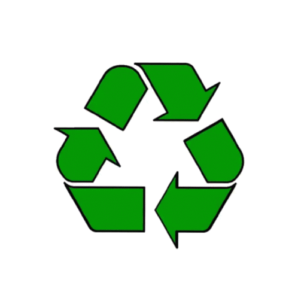

|  | RECYCLEAIDTOGETHER WE CAN MAKE A DIFFERENCE |
Recycling is the process of converting waste materials into new materials and objects. It is an alternative to "conventional" waste disposal that can save material and help lower greenhouse gas emissions (compared to plastic production, for example). Recycling can prevent the waste of potentially useful materials and reduce the consumption of fresh raw materials, thereby reducing: energy usage, air pollution, and water pollution. Recyclable materials include many kinds of glass, paper, and cardboard, metal, plastic, tires, textiles, and electronics. The composting or other reuse of biodegradable waste—such as food or garden waste—is also considered recycling. Materials to be recycled are either brought to a collection center or picked up from the curbside, then sorted, cleaned, and reprocessed into new materials destined for manufacturing